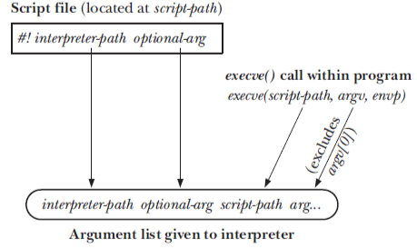

➤
Process Overview
A process is an active program and related resources.
- include a set of resources such as open files and pending signals,
internal kernel data, processor state, a memory address space with one or more memory
mappings, one or more threads of execution, and a data section containing global variables.
- The Linux kernel internally refers to processes as tasks.
Threads of execution, often shortened to threads, are the objects of activity within the
process.
- Each thread includes a unique program counter, process stack, and set of processor
registers.
- The kernel schedules individual threads, not processes.
- Linux has a unique implementation of threads: It does not differentiate between
threads and processes. A thread is just a special kind of process.
Process Life Cycle:
-
A process begins its life when, not surprisingly, it is created. In Linux, this occurs by means of the fork() system call, which creates a new process by duplicating an existing one.
-
Often, immediately after a fork() it is desirable to execute a new, different program.The
exec() family of function calls creates a new address space and loads a new program into
it.
- In Linux kernels,
fork() is actually implemented via the clone() system call
-
Finally, a program exits via the exit() system call.This function terminates the process
and frees all its resources.
Process vs Thread
Process
Each process provides the resources needed to execute a program.
- A process has a virtual address space, executable code, file descriptor / handles to system objects, a unique process identifier, environment variables, and at least one thread of execution.
Thread
A thread is an entity within a process that can be scheduled for execution.
- All threads of a process share its virtual address space and system resources.
- Each thread maintains its own stack frame and registers, exception handlers, a scheduling priority, thread local storage, a unique thread identifier, and a set of structures the system will use to save the thread context until it is scheduled.
- Since the threads of a process share the same memory, synchronizing the access to the shared data within the process gains unprecedented importance.
- Process creation with
fork() is relatively expensive, even with copy-on-write technique. Thread creation is faster than process creation—typically, ten times faster or better.
- On Linux, threads are implemented using the
clone() system call, so many of the attributes that must be duplicated in a child created by fork() are instead shared between threads. In particular, copy-on-write duplication of pages of memory is not required, nor is duplication of page tables.
Linux thread implementation
Linux has a unique implementation of threads. To the Linux kernel, there is no concept of a thread. Linux implements all threads as standard processes. Each thread has a unique task_struct and appears to the kernel as a normal process.
A thread is merely a process that shares certain resources, such as an address space, with other processes.
Other OS, such as Windows or Solaris, have explicit kernel support for threads, or called lightweight processes. To these other operating systems, threads are an abstraction to provide a lighter, quicker execution unit than the heavy process.
NPTL (Native POSIX Thread Library) is the GNU C library POSIX threads implementation that is used on Linux systems. The NPTL was originally developed by Red Hat. An application compiled with gcc -pthread and linked with -pthread uses NPTL code on Linux.
Resources not shared among threads:
- stack (local variables and function call linkage information).
- Each thread has its own stack whose size is fixed when the thread is created.
- On Linux/x86-32, the default stack size is 2 MB (which means 3G/2M = 1500 threads max).
- The main thread has a much larger space for stack growth
- pthread_attr_setstack() function can be used to control both the size and the location of the stack
- if the stack size resource limit (RLIMIT_STACK) is set to anything other than unlimited, then it is used as the default stack size when creating new threads.
- thread ID (Section 29.5);
- signal mask;
- thread-specific data (Section 31.3);
- the errno variable;
- On Linux, a thread-specific errno is defined as a macro that expands into a function call returning a modifiable lvalue that is distinct for each thread.
- floating-point environment (see fenv(3));
- realtime scheduling policy and priority (Sections 35.2 and 35.3);
- CPU affinity (Linux-specific, described in Section 35.4);
- capabilities (Linux-specific, described in Chapter 39);
Process Creation
fork() system call
fork() creates a new process by duplicating the calling process. The child obtains copies of the parent’s stack, data, heap, and text segments.
- For the parent, fork() returns the process ID of the newly created child.
- For the child, fork() returns 0.
- If necessary, the child can obtain its own process ID using getpid(), and the process ID of its parent using getppid().
- Caution: after a fork(), it is indeterminate which of the two processes is next scheduled to use the CPU.
- In Linux, there are version changes to make child-first-after-fork() default or parent-first. It is default can be changed in
/proc/sys/kernel/sched_child_runs_first
The child process and the parent process run in separate memory spaces. At the time of fork() both memory spaces have the same content. Even they are in different address space, the variable’s address (virtual address will be the same), but physical address will be different.
The entire virtual address space of the parent is replicated in the child, including the states of mutexes, condition variables, and other pthreads objects;
File sharing with fork()
With fork(), the child receives duplicates of all parant’s file descriptors, done with dup().
- I.e. descriptors in the parent and the child refer to the same open file description.
- The open file description contains the current file offset (as modified by read(), write(), and lseek()) and the open file status flags, thus they are shared by parent and child processes.
- If sharing of file descriptors is not desired, then each process should close unused descriptors after fork(), like in below figure.
Memory semantics of fork()
Only conceptually, fork() creates copies of the parent’s text, data, heap, and stack segments.
- For text segment (read-only). fork() just creates a text segment for the child by building the per-process page-table entries that refer to the same virtual memory page frames already used by the parent.
- For data, heap, stack segments, the kernel uses copy-on-write (COW).
- Initially, the kernel makes child’s page-table entries for these segments refer to the same physical memory pages as the parent, and the pages themselves are marked read-only.
- After the fork(), the kernel traps any attempts by either the parent or the child to modify one of these pages, and makes a duplicate copy of the page. This new page copy is assigned to the faulting process
- The implication: we can be sure the parent's memory footprint (the virtual memory pages) stays the same if the parent doesn’t do work after fork() and before wait().
- reason for COW: It is inefficient in that it copies much data that might otherwise be shared. Worse , if the new process were to immediately execute a new image, all that copying would go to waste.
- The only overhead incurred by fork() is the duplication of the parent’s page tables and the creation of a unique process descriptor for the child.
fork() implementation
Linux implements fork() via the clone() system call.
- The fork(), vfork(), and __clone() library calls all invoke the clone() system call with the requisite flags.
- The clone() system call, in turn, calls do_fork().
Refer to clone() implementation
vfork() system call
vfork() is expressly designed to be used in programs where the child performs an immediate exec() call. It is to get around inefficient old UNIX/BSD’s fork() copy memory implementation.
It should be used with caution, and not portable, and less useful with modern copy-on-write fork.
- No duplication of virtual memory pages or page tables is done for the child process (the only benefit to vfork() ). Instead, the child shares the parent’s memory until it either performs a successful exec() or calls _exit() to terminate.
- Execution of the parent process is suspended until the child has performed an exec() or _exit().
- File descriptors are still dup’ed during vfork().
- After vfork(), the child is guaranteed to be scheduled for the CPU before the parent.
Process Termination
Ways of termination
- Abnormal termination - delivery of a signal whose default action is to terminate the process (with or without core dump).
_exit(int status) system call
- _exit() always successfully terminate the process, it never returns
exit(int status) library call
- Exit handlers (functions registered with atexit() and on_exit()) are called, in reverse order of their registration.
- The stdio stream buffers are flushed.
- The _exit() system call is invoked
- Return from main()
- return n is equivalent to exit(n) That is, the C compiler places a call to exit()
after main() returns.
- C99 requires falling off the end of main without return should be equivalent to calling exit(0)
Details of termination
- Open file descriptors, directory streams are closed.
- As a consequence of closing file descriptors, any file locks held by this process are released.
- Any attached System V shared memory segments are detached, and the shm_nattch counter corresponding to each segment is decremented by one.
- For each System V semaphore for which a semadj value has been set by the process, that semadj value is added to the semaphore value.
- If this is the controlling process for a controlling terminal, then the SIGHUP signal is sent to each process in the controlling terminal’s foreground process group, and the terminal is disassociated from the session.
- Any POSIX named semaphores that are open in the calling process are closed as though sem_close() were called.
- Any POSIX message queues that are open in the calling process are closed as though mq_close() were called.
- If, as a consequence of this process exiting, a process group becomes orphaned and there are any stopped processes in that group, then all processes in the group are sent a SIGHUP signal followed by a SIGCONT signal.
- Any memory locks established by this process using mlock() or mlockall() are removed.
- Any memory mappings established by this process using mmap() are unmapped.
refer to kernel do_exit() implementation
Exit handlers
int atexit(void (*func)(void)) glic library function
- The atexit() function adds func to a list of functions that are called when the process terminates.
- Multiple exit handlers can be added, they are called in reverse order of registration.
- Glibc chains the registered exit handlers in a dynamically allocated linked list.
- A child process via fork() inherits a copy of parent’s exit handler registrations.
- When a process performs an exec(), all exit handler registrations are removed.
atexit() limitations:
- When it is called, an exit handler doesn’t know what status was passed to exit()
- We can’t specify an argument to the exit handler.
int on_exit(void (*func)(int, void *), void *arg) glic library function
- To address atexit() limitations, non-standard.
- Functions registered using
atexit() and on_exit() are placed on the same list.
In an application that creates child processes, typically only one of the processes (most often the parent) should terminate via exit(), while the other processes should terminate via _exit(). This ensures that only one process calls exit handlers and flushes stdio buffers, which is usually desirable.
nohup
A normal foo process:
- The process running
foo is created by an interactive shell (connected to a terminal).
- The process inherits
stdin, stdout, and stderr from the shell. Therefore it is also connected to the same terminal.
- If the shell receives a
SIGHUP, it also sends a SIGHUP to the process (which normally causes the process to terminate).
- Otherwise the shell waits (is blocked) until the process terminates or gets stopped.
if you put the process in the background at start, that is, foo &:
- The process running
foo is created, shell will not wait for its completion.
- The process inherits
stdout/stderr from the shell (so it still writes to the terminal).
- The process in principle also inherits
stdin, but as soon as it tries to read from stdin, it is blocked.
- It is put into the list of background jobs the shell manages, which means especially:
- It is listed with jobs and can be accessed using
%n (where n is the job number).
- It can be turned into a foreground job using
fg, in which case it continues as if you would not have used & on it (and if it was stopped due to trying to read from standard input, it now can proceed to read from the terminal).
- If the shell received a
SIGHUP, it also sends a SIGHUP to the process. Depending on the shell and possibly on options set for the shell, when terminating the shell it will also send a SIGHUP to the process.
disown
disown removes the job from the shell's job list/control. disown is purely internal to the shell; it causes the shell not to send SIGHUP when it terminates.
However note that it still is connected to the terminal, so if the terminal is destroyed (which can happen if it was a pty, like those created by xterm or ssh, and the controlling program is terminated, by closing the xterm or terminating the SSH connection), the program will fail as soon as it tries to read from standard input or write to standard output.
nohup
nohup is to effectively separate the process from the terminal, ie. the program not to have a controlling terminal, so that it won't be sent SIGHUP by the kernel when the terminal is closed.
- It closes process's standard input (the program will not be able to read any input, even if it is run in the foreground. it is not halted, but will receive an error code or
EOF).
- It redirects process's standard output and standard error to the file
nohup.out, so the program won't fail for writing to standard output if the terminal fails.
- It prevents the process from receiving a
SIGHUP (thus the name).
Note that nohup does not remove the process from the shell's job control and also doesn't put it in the background (but since a foreground nohup job is more or less useless, you'd generally put it into the background using &). For example, unlike with disown, the shell will still tell you when the nohup job has completed (unless the shell is terminated before, of course).
Process monitoring
wait() system call
- If there are multiple terminated children at a particular moment, SUSv3 leaves unspecified the order in which these children will be reaped by a sequence of wait(). Even across versions of the Linux kernel, the behavior varies.
Limitation:
- it is not possible to wait() for the completion of a specific child;
- If no child has yet terminated, wait() always blocks.
- It is only when a child process terminates. It is not possible to be notified when a child is stopped by a signal (such as SIGSTOP or SIGTTIN) or when a stopped child is resumed by delivery of a SIGCONT signal.
waitpid() system call
- To address wait() limitations.
- A WNOHANG flag to essentially make wait() non-blocking.
waitid() system call
- Similar to waitpid(), but provides more functionality. The most significant difference between waitpid() and waitid() is that waitid() provides more precise control of the child events that should be waited for.
wait3() and wait4()
Similar to waitpid(), but wait3() and wait4() return resource usage information about the terminated child in the structure pointed to by the rusage argument. This information includes the amount of CPU time used by the process and memory management statistics.
The wait() family of functions are implemented via a single (and complicated) system
call, wait4().
refer to kernel wait implementation
Orphan
If a parent exits before its children, the orphaned child is adopted by init. A call to getppid() will return the value 1.
- This can be used as a way of determining if a child’s true parent is still alive (assuming
a child that was not created by init).
- This is done at a task's exit. Kernel will reparent a task’s children on exit to either
another process in the current thread group or, if that fails, the init process.
do_exit()
calls exit_notify(), which calls forget_original_parent(), which, in turn, calls find_new_reaper()` to perform the reparenting.
Zombie
A child that terminates before its parent has had a chance to perform wait(). The kernel turns the child into a zombie.
Most of the resources held by the child are released back to the system, The only part of the process that remains is an entry in the kernel’s process table recording (among other things) the child’s process ID, termination status, and resource usage statistics
a zombie process can’t be killed by a signal, not even the (silver bullet) SIGKILL. This ensures that the parent can always eventually perform a wait().
- When the parent does perform a wait(), the kernel removes the zombie.
- If the parent terminates without doing a wait(), then the init process adopts the child and automatically performs a wait(), thus removing the zombie process from the system.
- Implication: for the long-live parent process that creates numerous children, it should perform wait(), or handle the delivery of the SIGCHLD signal,
Establish handler for SIGCHLD
The SIGCHLD signal is sent to a parent process whenever one of its children terminates.
By default, this signal is ignored, but we can catch it by installing a signal handler.
Program Execution
execve() system call
The execve() system call loads a new program into a process’s memory. During this operation, the old program is discarded, and the process’s stack, data, and heap are replaced by those of the new program. After executing various C library run-time startup code and program initialization code, the new program commences execution at its main() function.
- After an execve(), the process ID of the process remains the same.
- If the set-user-ID (set-group-ID) permission bit of the new program is set, the effective user ID is changed to that.
- Then execve() copies the value of the process’s effective user ID into its saved set-user-ID (same for group id).
- Successful execve() never returns. If it returns, it fails with errno set.
exec() library function family
Various library functions, all with names beginning with exec, are layered on top of the execve() system call.
fexecve() - specifies the file to be execed via the open file descriptor fd, rather than as a pathname.
- useful for applications that want to open a file, verify its contents by performing a checksum, and then execute the file.
Exec of interpreter scripts
If execve() detects that the file it has been given commences with the 2-byte sequence #!, it does below

File descriptor with exec()
By default, all file descriptors opened by a program that calls exec() remain open across the exec() and are available for use by the new program.
- The kernel provides a close-on-exec flag for each file descriptor. If this flag is set, then the file descriptor is automatically closed during a successful exec(), but left open if the exec() fails.
- The close-on-exec flag for a file descriptor can be accessed using the fcntl() system call.
- Linux also allows the close-on-exec flag to be modified using two unstandardized ioctl() calls: ioctl(fd, FIOCLEX) to set, and ioctl(fd, FIONCLEX) to clear.
The shell takes advantage of this feature to handle I/O redirection for the programs that it executes.
The steps for ls /tmp > dir.txt
- A fork() is performed to create a child process that is also running a copy of the shell (and thus has a copy of the command).
- The child shell opens dir.txt for output using file descriptor 1 (standard output). One way to do that is to use
dup2()
fd = open("dir.txt", O_WRONLY | O_CREAT, S_IRUSR | S_IWUSR | S_IRGRP | S_IWGRP | S_IROTH | S_IWOTH);
if (fd != STDOUT_FILENO) {
dup2(fd, STDOUT_FILENO);
close(fd);
}
- The child shell execs the ls program. The ls program writes its output to standard output, which is the file dir.txt.
system() library call
The system() function allows the calling program to execute an arbitrary shell command.The system() function creates a child process that invokes a shell to execute the command.
The main cost of system() is inefficiency. Executing a command using system() requires the creation of at least two processes—one for the shell and one or more for the command(s) it executes—each of which performs an exec().
- If efficiency or speed is a requirement, it is preferable to use explicit fork() and exec() calls to execute the desired program.
Implementation of system()
To implement system(), we need to use fork() to create a child that then does an execl() with arguments corresponding to the shell command. To collect the status of the child created by system(), we use a waitpid() call that specifies the child’s process ID.
- The hard part is to handle signals correctly.
- SIGCHLD should be blocked in calling process
- SIGINT/SIGQUIT should be ignored in the calling process, but default in the child process.
Signals and exec()
- During an exec(), the text of the existing process is discarded. This text may include signal handlers established by the calling program.
- Kernel resets the dispositions of all handled signals to SIG_DFL.
- During an exec(), the process signal mask and set of pending signals are both preserved, because they are maintained in Kernel space.
- This caused a bit of confusion, so it is recommended that signals should not be blocked or ignored across an exec() of an arbitrary program.
Kernel Internals
Process descriptor / task_struct
The kernel stores the list of process descriptors in a circular doubly linked list called the task list.

A process descriptor is of the type struct task_struct, defined in <linux/sched.h>.
- The task_struct is a relatively large data structure, at around 1.7 kilobytes on a 32-bit machine.
- The task_struct structure is allocated via the slab allocator to provide object reuse and
cache coloring
PID
The system identifies processes by a unique process identification value or PID.
- The kernel stores this value as
pid field inside each process descriptor (task_struct).
- type
pid_t, which is typically an int.
- For backwards compatiblity, the default maximum value is only 32,768 (that of a short int)
- the administrator may increase the maximum value via
/proc/sys/kernel/pid_max.
- Standard requires threads in the same group share a common PID.
- The indentifier shared by the threads is the PID of the thread group leader, called
tgid.
- The
getpid() system call returns the value of tgid relative to the current process instead of the value of pid
pid hashtable and chained list
In several circumstances, the kernel must be able to derive the process descriptor
pointer corresponding to a PID.
- When process P1 wishes to send a signal to another process, P2, it invokes
the kill( ) system call specifying the PID of P2 as the parameter.
To speed up the search, four hash tables have been introduced, each keyed on pid, tgid (thread group leader), pgrp (group leader), session (session leader).
- In the chain list rooted at the 71st entry of the hash table, there are two process descriptors corresponding to the PID numbers 246 and 4,351 (The PID numbers are stored in the
nr field)
- It also maintains a list of processes for each thread group, chained with
pid_list field.
Process State
TASK_RUNNING
The process is runnable; it is either currently running or on a runqueue waiting to run.
TASK_INTERRUPTIBLE: S state in ps(1)
The process is sleeping, blocked waiting for some condition to exist. When this condition exists, the kernel sets the process’s state to TASK_RUNNING.The process also awakes prematurely and becomes runnable if it receives a signal.
TASK_UNINTERRUPTIBLE: D state in ps(1)
The process is waiting on certain special classes of events without interruption, such as the completion of a disk I/O. The signal is not delivered until the process is out of this state.
In rare circumstances, a process may remain hung in this state, perhaps as the result of a hardware failure, an NFS problem, or a kernel bug. Because the task will not respond to signals, SIGKILL won’t terminate the hung process. If the underlying problem can’t otherwise be resolved, then we must restart the system in order to eliminate the process.
TASK_STOPPED
Process execution has stopped. This occurs if the task receives the SIGSTOP, SIGTSTP, SIGTTIN, or
SIGTTOU signal or if it receives any signal while it is being debugged.
TASK_TRACED
The process is being traced by another process, such as a debugger, via ptrace.
How to find current process's task_struct?
struct thread_info, was created that lives at the bottom of the stack. It has a pointer to the task's actual task_struct (dynamically allcoated by slab allocator).
- x86 makes use of the fact that struct
thread_info is stored on the kernel stack to calculate
the location of thread_info and subsequently the task_struct.
current_thread_info() (in <asm/thread_info.h>) is calculated by masking out the 13 least-significant bits (assuming 8KB stack size) of the stack pointer to obtain the thread_info structure.
After kernel v4.14, task_struct can be allocated by vmalloc, the way to use thread_info to find current task_struct is not used anymore. Now, task_struct is a per-cpu value.
#define current get_current()
static __always_inline struct task_struct *get_current(void)
{
return percpu_read_stable(current_task);
}
DECLARE_PER_CPU(struct task_struct*, current_task);
Process Context and Interrupt Context
Normal program execution occurs in user-space.When a program executes a system call or triggers an exception, it enters kernel-space. At this point, the kernel is said to be “executing on behalf of the process” and is in process context.
- System calls and exception handlers are well-defined interfaces into the kernel.A
process can begin executing in kernel-space only through one of these interfaces
In interrupt context, the system is not running on behalf of a process but is executing
an interrupt handler. No process is tied to interrupt handlers.
Process Family Tree
Each task_struct has a pointer to the parent’s task_struct, named parent, and a list of children, named children.
| Field name |
Description |
| real_parent |
Points to the process descriptor of the process that created P or to the descriptor of process 1 (init) if the parent process no longer exists. (Therefore, when a user starts a background process and exits the shell, the background process becomes the child of init.) |
| parent |
Points to the current parent of P (this is the process that must be signaled when the child process terminates); its value usually coincides with that of real_parent. It may occasionally differ, such as when another process issues a ptrace( ) system call requesting that it be allowed to monitor P |
| children |
The head of the list containing all children created by P. |
| sibling |
The pointers to the next and previous elements in the list of the sibling processes, those that have the same parent as P. |
struct task_struct *my_parent = current->parent;
struct task_struct *task;
struct list_head *list;
list_for_each(list, ¤t->children) {
task = list_entry(list, struct task_struct, sibling);
}
struct task_struct *task;
for (task = current; task != &init_task; task = task->parent)
;
struct task_struct *task;
for_each_process(task) {
printk(“%s[%d]\n”, task->comm, task->pid);
}
clone() system call
Linux specific.
- the cloned child doesn’t continue from the point of the call, but instead commences by calling the function specified in the func argument
- The cloned child process terminates either when func returns (in which case its return value is the exit status of the process) or when the process makes a call to exit().
- Since a cloned child may (like vfork()) share the parent’s memory, it can’t use the parent’s stack. Instead, the caller must allocate a suitably sized block of memory and pass a pointer to that block in the argument child_stack.
- The clone() flags argument let you select the child process's termination signal. When the child process is terminated, that signal is sent to the parent.
The clone() flag is also a bit mask that controls the operation of clone(), it is defined in <linux/sched.h>,
- CLONE_FILES:
- If set, the parent and the child share the same table of open file descriptors, this is different from fork().
- If not set, the child gets a copy of the parent's table, same as fork().
- CLOSE_FS
- If set, parent and child share file system related info - umask, root dir, current working dir. I.e, umaks(), chdir(), chroot() will affect each other.
- If not set, parent and child have separate copies of this information, same as fork().
- CLONE_SIGHAND
- If set, parent and child share the same table of signal dispositions. Using sigaction() or signal() to change a signal’s disposition will affect each other.
- If not set, not shared, the child gets a copy of the parent’s signal disposition table, same as fork().
- CLONE_VM
- If set, then the parent and child share the same virtual memory pages, same as vfork(). Updates to memory or calls to mmap() or munmap() by either process will be visible to the other process.
- If not set, not shared, same as fork().
Roughly speaking,
clone() kernel implementation
The bulk of the work in forking is handled by do_fork(), which is defined in
kernel/fork.c.This function calls copy_process() and then starts the process running.
The interesting work is done by copy_process():
- It calls dup_task_struct(), which creates a new kernel stack, thread_info structure,
and task_struct for the new process.The new values are identical to those of
the current task. At this point, the child and parent process descriptors are identical.
- It then checks that the new child will not exceed the resource limits on the number
of processes for the current user.
- The child needs to differentiate itself from its parent.Various members of the
process descriptor are cleared or set to initial values. Members of the process
descriptor not inherited are primarily statistically information.The bulk of the values
in task_struct remain unchanged.
- The child’s state is set to TASK_UNINTERRUPTIBLE to ensure that it does not yet run.
- copy_process() calls copy_flags() to update the flags member of the
task_struct.The PF_SUPERPRIV flag, which denotes whether a task used superuser
privileges, is cleared.The PF_FORKNOEXEC flag, which denotes a process that has
not called exec(), is set.
- It calls alloc_pid() to assign an available PID to the new task.
- Depending on the flags passed to clone(), copy_process() either duplicates or
shares open files, filesystem information, signal handlers, process address space, and
namespace.These resources are typically shared between threads in a given process;
otherwise they are unique and thus copied here.
- Finally, copy_process() cleans up and returns to the caller a pointer to the new
child.
Back in do_fork(), if copy_process() returns successfully, the new child is woken up
and run. Deliberately, the kernel runs the child process first.8 In the common case of the
child simply calling exec() immediately, this eliminates any copy-on-write overhead that
would occur if the parent ran first and began writing to the address space.
do_exit() kernel implementation
Regardless of how a process terminates, the bulk of the work is handled by do_exit(), defined in
<kernel/exit.c>, which completes a number of chores:
- It sets the PF_EXITING flag in the flags member of the task_struct.
- It calls del_timer_sync() to remove any kernel timers. Upon return, it is guaranteed
that no timer is queued and that no timer handler is running.
- If BSD process accounting is enabled, do_exit() calls acct_update_integrals()
to write out accounting information.
- It calls exit_mm() to release the mm_struct held by this process. If no other process
is using this address space—that it, if the address space is not shared—the kernel
then destroys it.
- It calls exit_sem(). If the process is queued waiting for an IPC semaphore, it is
dequeued here.
- It then calls exit_files() and exit_fs() to decrement the usage count of objects
related to file descriptors and filesystem data, respectively. If either usage counts
reach zero, the object is no longer in use by any process, and it is destroyed.
- It sets the task’s exit code, stored in the exit_code member of the task_struct, to
the code provided by exit() or whatever kernel mechanism forced the termination.
The exit code is stored here for optional retrieval by the parent.
- It calls exit_notify() to send signals to the task’s parent, reparents any of the task’s
children to another thread in their thread group or the init process, and sets the
task’s exit state, stored in exit_state in the task_struct structure, to EXIT_ZOMBIE.
- do_exit() calls schedule() to switch to a new process. Because
the process is now not-schedulable, this is the last code the task will ever execute.
do_exit() never returns.
At this point, all objects associated with the task (assuming the task was the sole user)
are freed. The task is not runnable (and no longer has an address space in which to run)
and is in the EXIT_ZOMBIE exit state. The only memory it occupies is its kernel stack, the
thread_info structure, and the task_struct structure. The task exists solely to provide
information to its parent. After the parent retrieves the information, or notifies the kernel
that it is uninterested, the remaining memory held by the process is freed and returned to
the system for use.
wait() kernel implementation
The wait() family of functions are implemented via a single (and complicated) system
call, wait4().
The standard behavior is to suspend execution of the calling task until one
of its children exits, at which time the function returns with the PID of the exited child.
Additionally, a pointer is provided to the function that on return holds the exit code of
the terminated child.
When it is time to finally deallocate the process descriptor, release_task() is
invoked. It does the following:
- It calls __exit_signal(), which calls __unhash_process(), which in turns calls
detach_pid() to remove the process from the pidhash and remove the process
from the task list.
- __exit_signal() releases any remaining resources used by the now dead process
and finalizes statistics and bookkeeping.
- If the task was the last member of a thread group, and the leader is a zombie, then
release_task() notifies the zombie leader’s parent.
- release_task() calls put_task_struct() to free the pages containing the
process’s kernel stack and thread_info structure and deallocate the slab cache containing
the task_struct.
At this point, the process descriptor and all resources belonging solely to the process
have been freed.
Kernel threads
It is often useful for the kernel to perform some operations in the background as demons. The kernel
accomplishes this via kernel threads — standard processes that exist solely in kernel space.
- In ‘ps’ output, the names are surrounded by square brackets ([]).
- Example: pdflush - it periodically flush dirty pages from buffer cache to disk.
- They operate only in kernel-space and do not context switch into user-space.
- However, they are schedulable and preemptable, the same as normal processes.
kernel threads do not have an address space.
- Their
mm pointer, which points at their address space, is NULL. The active_mm points to the mm of the previous runnig process so that it can use that page table.
A kernel thread is created by forking off of the kthreadd kernel process, the PID of kthreadd is 2.
The interface declared in <linux/kthread.h> for spawning a new kernel thread from an existing one:
struct task_struct *kthread_create(int (*threadfn)(void *data),
void *data,
const char namefmt[],
...)
The new task is created via the clone() system call by the kthread kernel process.The
new process will run the threadfn function, which is passed the data argument.The
process will be named namefmt, which takes printf-style formatting arguments in the variable
argument list. The process is created in an unrunnable state; it will not start running
until explicitly woken up via wake_up_process(). A routine, kthread_run(), implemented as a macro, simply calls both kthread_create() and wake_up_process():
#define kthread_run(threadfn, data, namefmt, ...) \
({ \
struct task_struct *k; \
k = kthread_create(threadfn, data, namefmt, ## __VA_ARGS__); \
if (!IS_ERR(k)) \
wake_up_process(k); \
k; \
})